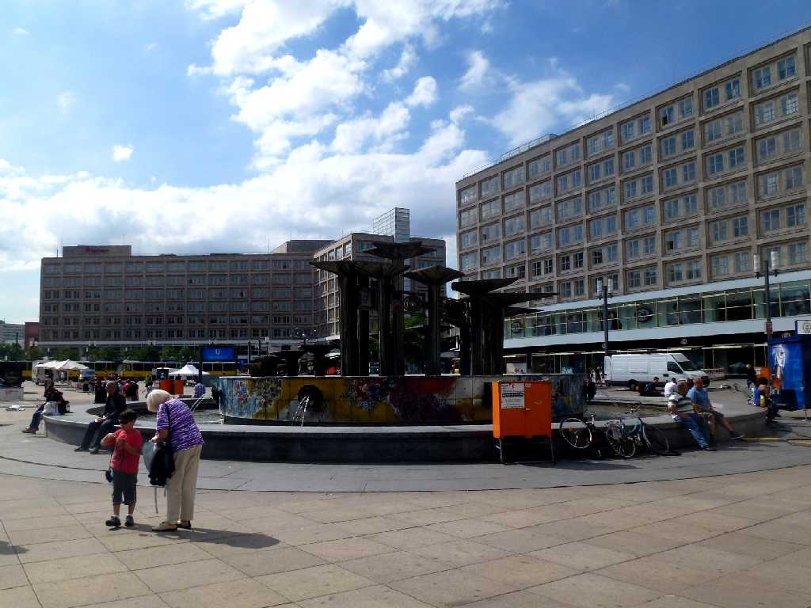
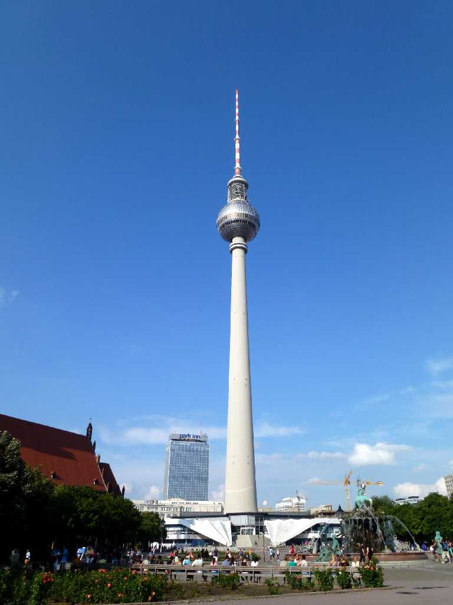
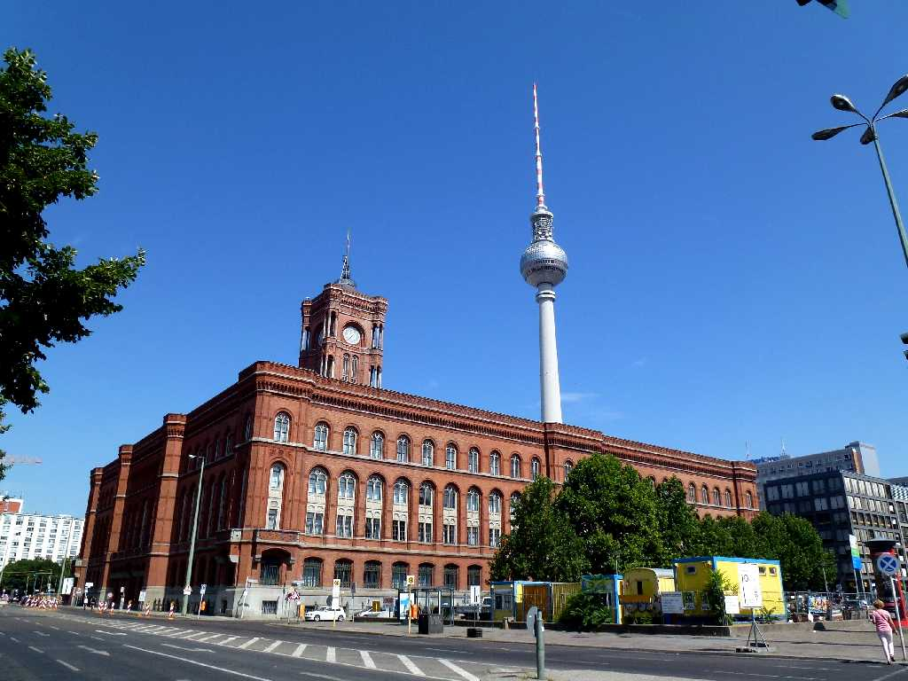
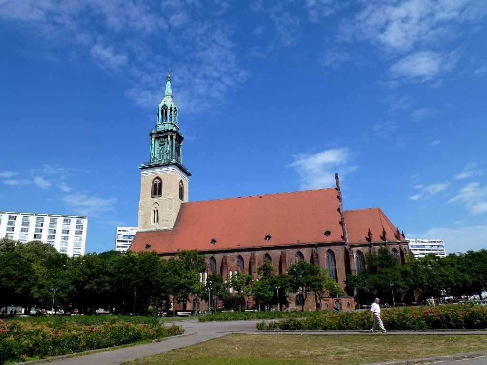
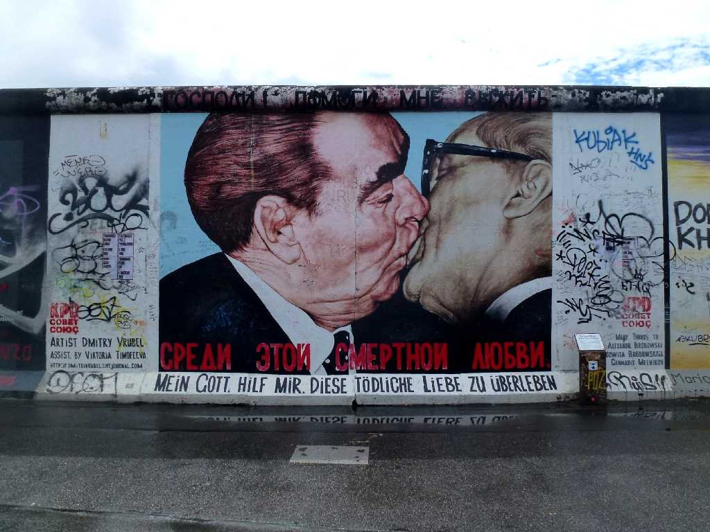

July 30 2013 Alexanderplatz Berlin
８０日間世界一周鉄道の旅で３７日目 旧東ドイツの中心街アレクサンダー広場

Berliner Fernsehturm
ベルリンのテレビ塔で約３０年前に登り東ベルリンから西ベルリンを遠目に観た

Rotes Rathaus
ベルリン市の赤の市庁舎

Marienkirche
約３０年前は左奥の旧ホテルに宿泊しましたが今回の鉄道の旅はゲストハウスに宿泊

East Side Gallery